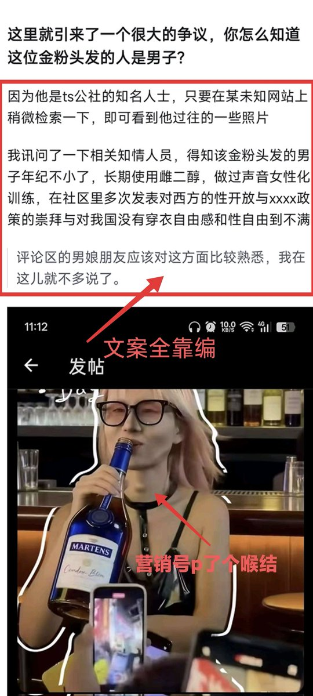

nonnun
@h191980276
@luo663663 就连原图都是假的，手机都没p干净

造媱
@luo663663
单纯看错性别？单纯看错性别，还给别人专门p一个喉结出来，然后配上一个虚假人设文案，告诉我这是单纯看错性别。
她们这点把戏我再熟悉不过了，以前山东女保姆猥亵男婴的案子就使用过了，所以我头像和id不是在歧视她们，只是看清了她们😁 https://t.co/1BwadPb1vV